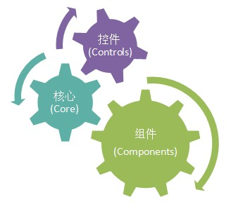
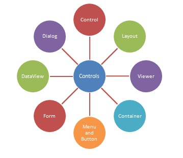

系统构架
模块
整个系统被分为 3 个模块。

Core 核心: 包含最底层的通用代码, 和一些常用的Javascript代码。比如 添加主页、复制文本等功能。
Controls 控件: 包含常用的界面组件。控件是只用于界面的组件。
Components 组件: 包含常用功能的一些封装。一般地，组件的产生是根据实际需要制定的。
Core 核心
Controls 控件

所有控件都被放在 system/controls中。
Components 组件
组件是形式灵活的一个功能集合，可以理解为插件。组件的 html、css和js文件 被放在一起。
继续阅读《项目文件夹结构》>>